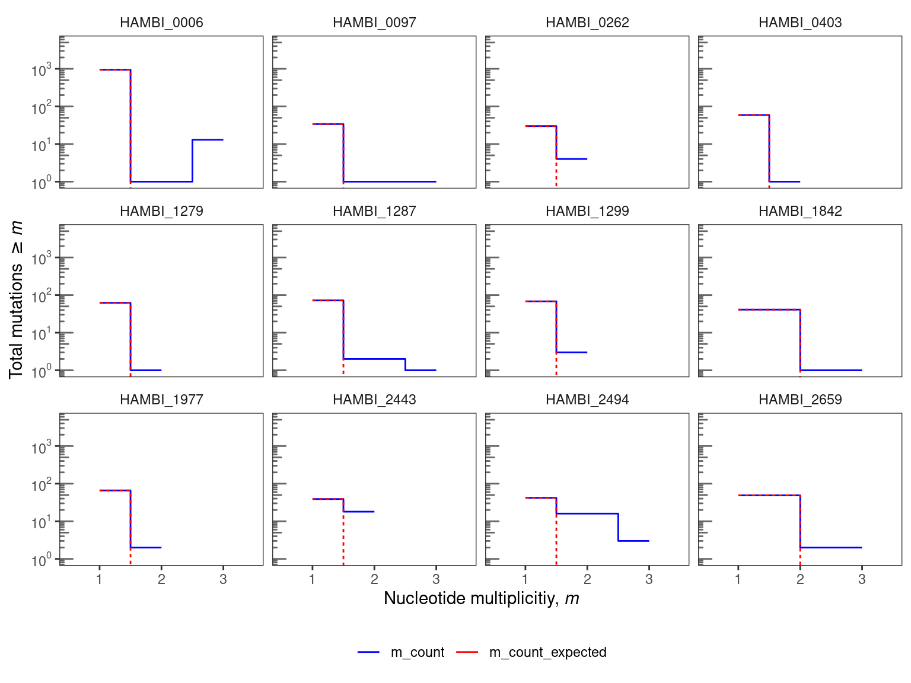
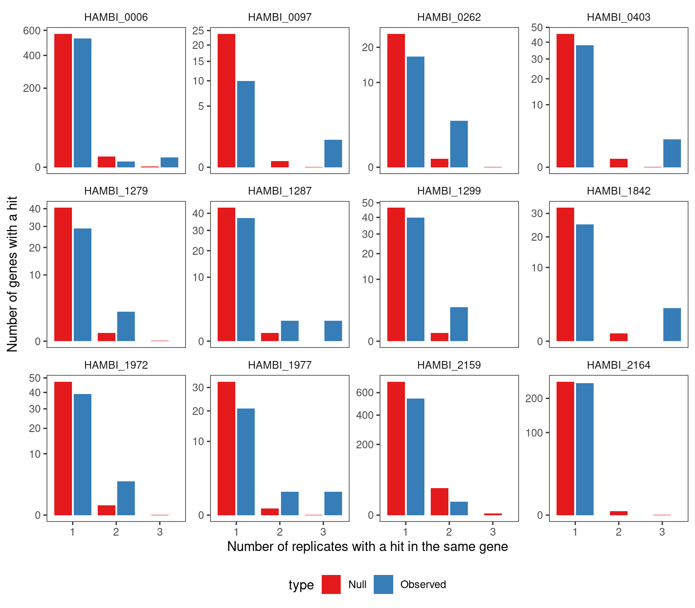
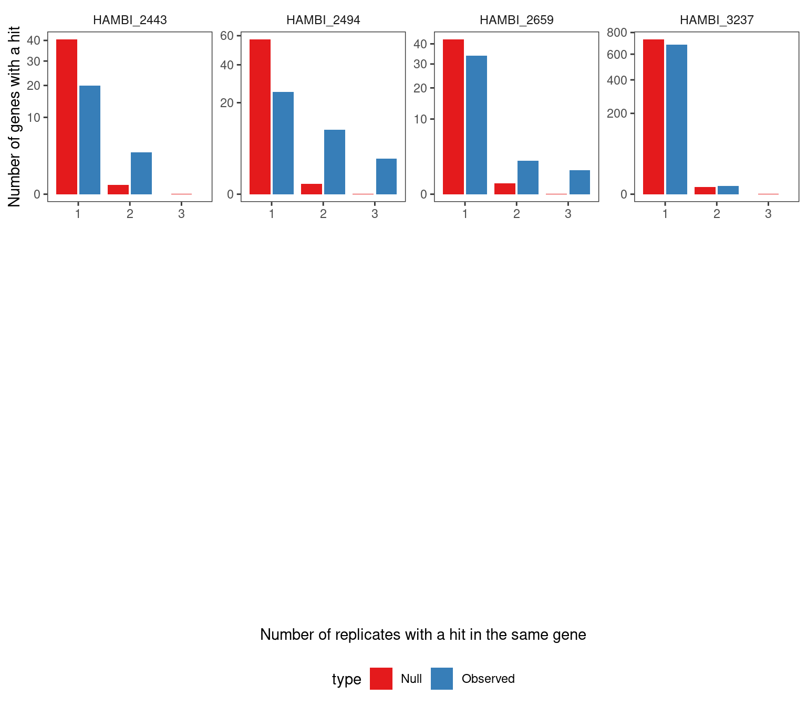
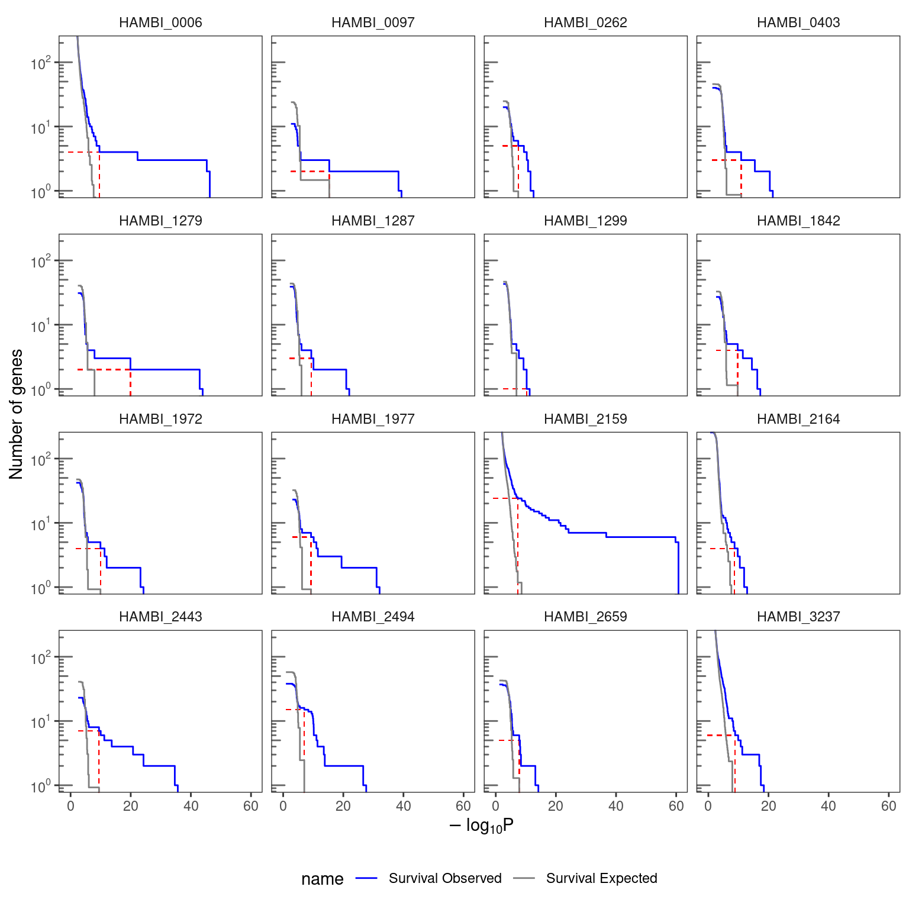
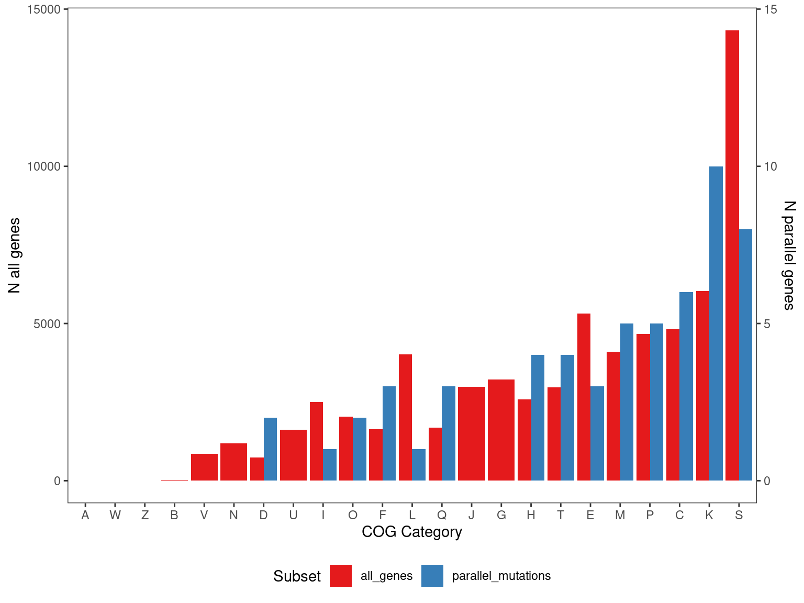
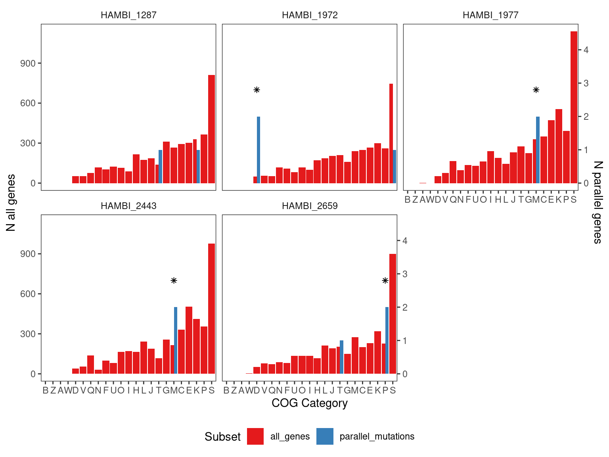

WGS genetic parallelism analysis
1 Setup
Libraries and global variables
Set up some directories
2 Read data
The mutect2 documentation says that any variant without “PASS” is false positive and should be removed. We will follow this convention here and only focus on PASSing mutations.
Show/hide code
# note that 1287 got an extra replicate of replicate "A" sequenced. It was called replicate "B" in the
# files and I will combine it with the other replicate "A"
tofilter <- mgvars %>%
filter(strainID == "HAMBI_1287" & replicate %in% c("A","B"))
# this is to make sure we filter out duplicates by randomly taking one
# from each group BUT to make sure to select duplicates that have a PASS
tocombine <- tofilter %>%
group_by(chrom, pos, ref, alt) %>%
mutate(W = n()) %>%
mutate(W1 = case_when(W > 1 & filter == "PASS" ~ 1,
W > 1 & filter != "PASS" ~ 0,
W == 1 ~ 1)) %>%
mutate(W2 = if_else(W > 1 & sum(W1) == 0, 1, 0)) %>%
mutate(W3 = W2 + W1) %>%
relocate(W, W1, W2, W3) %>%
filter(W3 == 1) %>%
slice(1) %>%
dplyr::select(-W, -W1, -W2, -W3) %>%
mutate(replicate = "A")
mgvars_filt <- anti_join(mgvars, tofilter) %>%
bind_rows(tocombine) %>%
mutate(replicate = if_else(replicate == "B", "C", replicate)) %>%
# we are filtering by requiring a depth of at least 10 reads
# and that the variant passed the mutect2 internal filters
filter(filter == "PASS") %>%
group_by(chrom, pos, ref, alt, replicate) %>%
filter(freq_alt == max(freq_alt)) %>%
ungroup()3 Parallelism at nucleotide level
Looking at all mutations (inside and outside of coding sequences, synonymous and nonsynonymous)
Show/hide code
We identified 22 species with detectable mutations (basically everything, except for 1299 for which the sequencing failed). Interestingly, (as shown above) there are many species with a huge amount of parallel mutations across all three replicates. For example there are 1497 sites with the exact same mutation in all three sequenced replicates. Most of these are not fixed mutations (but some of them are), but what I realized when digging deeper is that most of these extremely parallel mutations reside on predicted plasmid sequences, in mobile genetic elements (like transposases), and in predicted prophages. Certainly something interesting is going on in these regions of these species, but I don’t think that short read sequencing is really sufficient to tell us what is going on. Instead short reads seem to give lots of short indels in very small windows of the genome producing a lot of noise. So I think it is best to try and remove these kinds of mutations before proceeding with the analysis.
We used the tools MGEfinder v1.0.3 with database v1.0.2 (Durrant et al. 2020) and geNomad v1.7.4 (Camargo et al. 2023) to identify mobile elements, plasmids and integrated viruses (prophages) in the genomes and excluded these regions from subsequent analyses.
Show/hide code
mgvars_filt_mb <- mgvars_filt %>%
left_join(mgefinder, by = join_by(strainID, chrom), relationship = "many-to-many") %>%
filter(!(pos >= start.y & pos <= end.y)) %>%
dplyr::select(-name, -start.y, -end.y, -prediction_tool) %>%
distinct() %>%
left_join(genomad, by = join_by(strainID, chrom), relationship = "many-to-many") %>%
filter(!(pos >= start & pos <= end)) %>%
dplyr::select(-name, -start, -end, -prediction_tool) %>%
distinct() %>%
rename(start = start.x, end = end.x)Show/hide code
OK this seems a lot more reasonable here… Now there are much fewer mutations that are parallel across the replicates.
To put these observations in context, we can compare them to a simple null model in which mutations are uniformly distributed across the sites in the genome. We can then check how many sites with 1, 2, and 3-fold multiplicity that we would expect by chance. We define nucleotide parallelism as the number of mutations occurring at the same site in the genome in independent populations. For each site, we define the multiplicity, \(m_{i}\), as the number of populations (i.e., replicates) with a mutation detected at that site, so that the multiplicity in this experiment can range from one to three.
The expected number of mutations with \(m_{i} \geq m\) in a sample of total mutations size \(n_{tot}\) is:
\[ S(m) \approx \sum_{n \geq m} \frac{n}{n_{tot}} \cdot L_{tot} \cdot \frac{ \left( \frac{n_{tot}}{L_{tot}} \right) ^n}{n!} e^{-n_{tot}/L_{tot}} \]
where \(L_{tot}\) is the total number of bases in the genome.
3.1 Nucleotide parallelism by treatment
Here we will do the estimation separately for each species \(\times\) treatment combination.
Show/hide code
nuc_survival <- mgvars_filt_mb %>%
dplyr::select(strainID, pos, ref, alt, replicate) %>%
# multiplicity = number of replicate populations each unique mutation is
# observed in group by the mutation position, with alternative allele to the
# grouping
summarize(m = n_distinct(replicate), .by = c(strainID, pos, ref, alt)) %>%
# now calculate the total number of mutations across all replicates so we need
# to ungroup by mutation position/alt allele but because we still want to
# determine this value by treatment category we keep the treatment category
# grouping. However, this should be changed if you want to for example average
# over all the treatment conditions on a species basis
group_by(strainID) %>%
count(m, name = "m_count") %>%
mutate(n = m * m_count,
Ntot = sum(n),
perc = n / Ntot * 100) %>%
left_join(genome_len, by = join_by(strainID)) %>%
arrange(cur_group_id(), desc(m)) %>%
# dpois() tells the probability mass at a given number of counts. Here we
# want to get the probability of observing n mutations with multiplicity
# = mi (i.e. the counts of mi in the observed data). We assume that
# mutations independently occur on the genome of size Ltot at a rate of
# lambda = Ntot/Ltot and that generally the events are rare. Thus this
# situation can be modeled by the Poisson distribution. We can get the
# binned number of mutations per level of multiplicity m by multiplying
# the probability by the length of the genome and the binned mutations
# divided by the total number of mutations.
mutate(m_count_expected = cumsum((m_count / Ntot) *
total_len *
dpois(m, lambda = Ntot / total_len))) %>%
dplyr::select(-num_contigs) %>%
relocate(m, n, Ntot, perc, m_count, m_count_expected) %>%
ungroup()
# setup for plotting
nuc_survival_plot <- nuc_survival %>%
group_by(strainID) %>%
# when there is only one multiplicity observed for a mutation filter such
# that the multiplicty of that mutation must be greater than one.
# Otherwise include all remaining mutations (m > 0)
filter(case_when(n() == 1 ~ m > 1,
TRUE ~ m > 0)) %>%
pivot_longer(cols = c("m_count", "m_count_expected")) %>%
mutate(label = paste(strainID)) %>%
# and make final plot
plot_nuc_survival(., 5000, c(1, 10, 100, 1000, 10000), 4)
3.2 Conclusion
Nucleotide parallelism results are presented in Figure Figure 1. For these species this very simple null model mostly predicts that we should expect fewer than two parallel mutations (same position, same alternative allele) across the three replicate populations. For 12 evolved species the observed data show an excess of nucleotide parallelism relative to this simple null expectation. In particular HAMBI_0006, HAMBI_1287, and HAMBI_2494 all have at least 1 mutation that is identical across all three replicate evolved populations. However, multi-hit sites are only a very small fraction of the total observed mutations across all species (~ 3% across species with multi-hit sites). Thus, we will continue our analysis but looking at the gene level.
4 Parallelism at gene level
If selection pressures and mutation rates did not vary between genes, the number of mutations in each gene should be proportional to the target gene size. We assume that gene length is a primary driver of the target size. We then define a multiplicity for each gene according to:
\[m_{i} = n_{i} \cdot \frac{\overline{L}}{L_{i}} \tag{1}\]
where \(n_{i}\) is the number of nonsynonymous mutations (i.e., amino acid changing) in \(gene_{i}\) across all replicate populations per species, \(L_{i}\) is the total number of nonsynonymous sites (i.e., excluding 4-fold degenerate sites) in \(gene_{i}\), and \(\overline{L}\) is the average value of \(L_{i}\) across all genes in the genome. This definition ensures that under the null hypothesis, all genes have the same expected multiplicity \(\overline{m} = n_{tot}/n_{genes}\).
We next define a null model for gene multiplicity that assumes mutations are assigned to genes with probability:
\[p_{i} \propto L_{i} r_{i} \tag{2}\]
for some set of enrichment factors \(r_{i}\). In the alternate model, the maximum likelihood estimator of the enrichment factors \(r_{i}\) is the ratio of observed to expected gene multiplicities, \(r_{i} = m_{i}/\overline{m}\). The net increase of the log-likelihood relative to the null model (\(r_{i} = 1\)) is then given by:
\[\Delta \ell = \sum_{i} n_{i} \log \left ( \frac{m_{i}}{\overline{m}} \right ) \tag{3}\]
This likelihood ratio estimator is equivalent to the total G-score introduced in earlier work (Tenaillon et al. 2016). Here we assess statistical significance using permutation tests following Shoemaker et al. (Shoemaker et al. 2021). For permutations tests (n = 10,000) we randomly resample mutations to the observed \(n_{tot}\) set size from each species using the multinomial distribution, where the probability of sampling a non-synonymous mutation at \(gene_{i}\) was given by \(p_{i} = {L_{i}} / {L_{tot}}\) where \(L_{i}\) is the total number of nonsynonymous sites in \(gene_{i}\) and \(L_{tot}\) is the total number of nonsynonymous sites in the genome.
We next identify specific genes enriched for mutations following the criteria of Good et. al . (Good et al. 2017). We calculate a value for each gene using the equation:
\[P_{i} = \sum_{n \geq n_{i}} \frac{ \left ( \frac{n_{tot} L_{i}}{ \overline{L} N_{genes}} \right )^{n}}{n!} e^{- \frac{n_{tot} L_{i} }{\overline{L} N_{genes}}} \tag{4}\]
Here we only consider genes with \(n_{i} \geq 3\) to exclude low values driven primarily by gene length. Under the null hypothesis, the expected number of genes with \(P_{i} \geq p\) can be found using a Poisson survival curve given by:
\[\overline{N}(P) \approx \sum_{i=1}^{N_{genes}} \sum_{n=3}^{\infty} \theta (P - P_{i}(n, L_{i}) \cdot \frac{ \left( \frac{n_{tot} L_{i}}{\overline{L} N_{genes}} \right)^{n}}{n!} e^{-\left( \frac{n_{tot} L_{i}}{\overline{L} N_{genes}} \right)} \tag{5}\]
We can compare this expected number to the observed number of genes \(N(P)\) using a critical value (\(P^{\ast}\)) such that
\[\frac{\overline{N}(P^{\ast})}{N(P^{\ast})} \leq \alpha \tag{6}\]
for a given FDR \(\alpha\) value of 0.05. For this value we then define the set of significantly enriched genes as:
\[I = \left\{ i : P_{i} \leq P^{\ast} \left(\alpha \right) \right\} \tag{7}\]
4.1 Prepare input data for non-syn mutations only
Show/hide code
mgvars_filt_ns <- mgvars_filt_mb %>%
# exclude intragenic, intergenic, and synonymous mutations. Also exclude
# fusion functions because these are weird and also rare. Excluding the
# modifier category also ensures that we filter out any tRNAs with mutations
filter(!str_detect(effect, "intergenic|intragenic|synonymous|fusion")) %>%
filter(!str_detect(impact, "MODIFIER")) %>%
dplyr::select(strainID, replicate, chrom:alt, locus_tag) %>%
relocate(strainID, locus_tag)4.2 G score
Warning! this takes some time
Show/hide code
muts_by_sp <- mgvars_filt_ns %>%
group_by(strainID) %>%
distinct() %>%
mutate(groupid = cur_group_id()) %>%
group_by(groupid, strainID)
# doing 10000 permutations
result_sp <- run_full_gene_parallelism_pipeline(muts_by_sp, degentab, 10000)
# Save this for later
write_rds(result_sp, here::here(data, "parallelism_results_sp_nomobile.rds"))4.2.1 Simulating the number of replicates with a parallel gene hit
As another sanity check, we took the resamplings from the null distribution and calculated the number of replicates with a parallel gene hit (i.e. the same gene hit in \(\geq 2\) experimental replicates) and compared that to the observed distribution. The null distribution reflected the process of sampling a mutation under a multinomial distribution with probability proportional to the total number of nonsynonymous sites \(L_{i}\) in \(gene_{i}\). We observed that in 9/16 cases the null distribution produced fewer parallel gene hits than observed in the data from 2 experimental replicates. In all 16 cases the null distribution produced fewer parallel gene hits than observed in the data from 3 experimental replicates. Thus, for some suspicious genes with very high mutational density (see below) we required these genes to be present in all three replicates to include them in our final significant gene lists.


4.2.2 Visualize the survival curves for each treatment combination
Show/hide code
survcurv <- result_sp$output_df2plot %>%
filter(!is.na(xend)) %>%
mutate(label = strainID) %>%
ggplot() +
geom_segment(
aes(
x = x,
y = y,
xend = xend,
yend = yend
),
linetype = "dashed",
linewidth = 0.25, color = "red"
) +
geom_step( aes(x = obs_p, y = value, color = name)) +
facet_wrap(~ label, ncol = 4) +
labs(x = TeX("$-log_{10}P$"), y = "Number of genes") +
scale_color_manual(values = c("blue", "grey50")) +
scale_y_log10(
breaks = c(1, 10, 100),
labels = scales::trans_format("log10", scales::math_format(10 ^.x))
) +
annotation_logticks(sides = "l", color = "grey40") +
coord_cartesian(ylim = c(1, 200)) +
theme_bw() +
theme(
strip.background = element_blank(),
panel.grid = element_blank(),
legend.position = "bottom"
)
4.2.3 Inspecting individual genes
Also some genes tend to have a large number of consecutive mutations which is probably due to incorrect read mapping and not real mutations so we will try and filter these out. We’ll do this by filtering on genes with a mutational density \(d_{g} \gt 0.15\), where the mutational density in gene \(g\) was defined as
\[d_{g} = \frac{|A|_{g}}{b_{g} - a_{g}}\]
for all genome positions \(x\) on the interval \(\{x | a_{g} \leq x \leq b_{g}\}\) where \(b_{g}\) is the greatest position and \(a_{g}\) is the smallest position of observed mutations in gene \(g\) and \(|A|_{g}\) is the cardinality of the mutation set.
Show/hide code
output_gene_table_filt <- result_sp$output_gene_table %>%
# only genes exceeding the critical pstar value from the survival curves above
filter(neg_log10P >= pstar) %>%
# only include genes with at least 3 hits in the same gene or found in more than one replicate.
filter(observed_hits_n_i >= 3 | n_replicate > 1) %>%
# filters out the problematic genes above unless the number of replicates detected is 2 or more
filter(case_when(n_replicate < 2 ~ !(locus_tag %in% high_density_genes),
TRUE ~ n_replicate > 1)) %>%
left_join(distinct(select(mgvars_filt, locus_tag, product, cds_length:gene)),
by = join_by(locus_tag))
output_gene_table_filt5 Convergent/divergent evolution
So now we have a list of enriched genes for each species. We can see that, for example, some gene functions pop up multiple times (like transcription factors and sensory kinases). Are these different functions popping up across species more that we would expect by chance? We’ll try and test this using a simulation based approach
Show/hide code
cog_description <- tibble::tribble(
~COG_category_single, ~COG_category_long,
"J", "J - Translation, ribosomal structure and biogenesis",
"A", "A - RNA processing and modification",
"K", "K – Transcription",
"L", "L - Replication, recombination and repair",
"B", "B - Chromatin structure and dynamics",
"D", "D - Cell cycle control, cell division, chromosome partitioning",
"Y", "Y - Nuclear structure",
"V", "V - Defense mechanisms",
"T", "T - Signal transduction mechanisms",
"M", "M - Cell wall/membrane/envelope biogenesis",
"N", "N - Cell motility",
"Z", "Z – Cytoskeleton",
"W", "W - Extracellular structures",
"U", "U - Intracellular trafficking, secretion, and vesicular transport",
"O", "O - Posttranslational modification, protein turnover, chaperones",
"X", "X - Mobilome: prophages, transposons",
"C", "C - Energy production and conversion",
"G", "G - Carbohydrate transport and metabolism",
"E", "E - Amino acid transport and metabolism",
"F", "F - Nucleotide transport and metabolism",
"H", "H - Coenzyme transport and metabolism",
"I", "I - Lipid transport and metabolism",
"P", "P - Inorganic ion transport and metabolism",
"Q", "Q - Secondary metabolites biosynthesis, transport and catabolism",
"R", "R - General function prediction only",
"S", "S - Function unknown"
)Show/hide code
# formatting the eggnog dataframe for downstream use
enrichedspprefix <- unique(paste0("H", str_extract(output_gene_table_filt$locus_tag, "\\d+")))
enrichedsp <- unique(output_gene_table_filt$strainID)
names(enrichedsp) <- enrichedspprefix
# use a seed for reproducibility because we are randomly sampling the split COGs
withr::with_seed(6783543, eggnog <- eggnograw %>%
filter(str_detect(query, paste(enrichedspprefix, collapse="|"))) %>%
mutate(COG_category = if_else(COG_category == "-", NA_character_, COG_category)) %>%
# If multiple cog categories, split them into a character vector then randomly sample
# one of them
mutate(COG_category1 = strsplit(COG_category, split = "")) %>%
rowwise() %>%
mutate(COG_category_single = sample(COG_category1, 1)) %>%
ungroup() %>%
mutate(strmatchvar = str_extract(query, "^[:alnum:]*")) %>%
mutate(strainID = str_replace_all(strmatchvar, enrichedsp)) %>%
dplyr::select(-strmatchvar, -COG_category1) %>%
rename(locus_tag = query) %>%
left_join(cog_description, by = join_by(COG_category_single)) %>%
relocate(strainID, locus_tag, COG_category_single, COG_category_long))
write_tsv(eggnog, here::here(shared, "HAMBI_all_eggnog_formatted.tsv.xz")) save a copy of significantly parallel genes as a table
5.1 All species
Calculate the probability of each gene (ns_sites/total_ns_sites) and link to COG categories
5.1.1 Jensen Shannon Divergence
This function draws n genes from each species with a probability proportional to gene length, where n = the number of significant parallel genes observed from the data. We repeat this simulation 10 000 times and below we check if 1) the Jensen Shannon divergence between the distribution of the COG categories drawn randomly and the background (i.e., the distribution of COG categories in the whole genome) is greater than the Jensen Shannon divergence between the background and the observed distribution of COG categories in significantly parallel genes. The idea is that if some COG categories are enriched/depleted in the parallel genes, then the JSD divergence between the observed and the background should be larger than the JSD between the random sampled genes (sampling probability based only on gene length) and the background. We calculate an empirical P value by “counting” how many times the simulated JSD exceeds the observed.
Show/hide code
gene_draw <- function(){
output_gene_table_filt %>%
group_by(strainID) %>%
summarize(nsiggenes = n()) %>%
left_join(eggnog_nslen,
by = join_by(strainID)) %>%
nest(data = -c(strainID)) %>%
mutate(locus_tag = map(
data,
\(x) sample(
x = x$locus_tag,
size = unique(x$nsiggenes),
prob = x$p,
replace = FALSE
)
)) %>%
dplyr::select(-data) %>%
unnest(cols = locus_tag)
}
# take 10 000 random draws of the genes. Use a seed for reproducibility
withr::with_seed(12367,
genes_simulated <- map(1:10000, ~gene_draw(), .progress=TRUE) %>%
list_rbind(names_to = "id"))
# save the output so we don't need to run again
write_rds(genes_simulated, here::here(data, "genes_simulated_nomobile.rds"))Some data formatting
Show/hide code
# read data back
genes_simulated <- read_rds(here::here(data, "genes_simulated_nomobile.rds"))
# map the locus_tags to COG categories for the simulated
# gene draws
COGs_distribution_simulated <- genes_simulated %>%
left_join(eggnog_nslen, by = join_by(strainID, locus_tag)) %>%
group_by(id) %>%
count(COG_category_single, name = "nsim") %>%
ungroup()
# get the discrete distribution of COGs in the significant parallel genes
COGs_distribution_observed <- left_join(output_gene_table_filt, eggnog,
by = join_by(locus_tag, strainID)) %>%
count(COG_category_single, name = "nobs")
# get the discrete distribution of COGs across the whole genome of all species
# this is the null case (i.e. the background that we would expect if there was no
# enrichment)
COGs_distribution_nullexpectation <- eggnog %>%
count(COG_category_single, name = "nnull") Now we calculate the Jensen Shannon divergence between the background and the simulated data to estimate an empirical P value
Show/hide code
# function to calculate the Jensen Shannon divergene of a pair of
# distributions
JSD_pair <- function(p, q){
m <- 0.5 * (p + q)
JS <- 0.5 * (sum(p * log(p/m)) + sum(q * log(q/m)))
return(JS)
}
# Calculate the Jensen Shannon divergence between the COG distribution observed in
# enriched genes and the COG distribution in the genomic background
JSD_observed <- left_join(COGs_distribution_observed, COGs_distribution_nullexpectation,
by = join_by(COG_category_single)) %>%
mutate(p = nobs/sum(nobs),
q = nnull/sum(nnull)) %>%
summarize(JSD = JSD_pair(p, q)) %>%
pull()
# now calculate JSD between the simulated draws and the backgound distribution
JSD_simulated <- left_join(COGs_distribution_simulated,
COGs_distribution_nullexpectation,
by = join_by(COG_category_single)) %>%
# drops from calculation categories that aren't in both the observed data
# and the resampled data. Need to do this because JSD can't handle zero values
drop_na() %>%
group_by(id) %>%
mutate(p = nsim/sum(nsim),
q = nnull/sum(nnull)) %>%
summarize(JSD = JSD_pair(p, q)) %>%
pull(JSD)
# proportion of JSD measures between simulated and the background that are greater
# than the JSD between the observed and the background
global_p <- length(JSD_simulated[JSD_simulated >= JSD_observed])/length(JSD_simulated)
global_p[1] 0.3975.1.2 Enrichment of individual COG categories
OK so the overall distribution of COG categories in the parallel genes is not significantly different than in the rest of the genome - ~40% of the time the JSD between the COG distribution in a random sample and the background is greater than the observed COG distribution and the background.
5.1.2.1 Hypergeometric Test
We can test enrichment in individual COG categories in individual species using the hypergeometric test
Show/hide code
library(qvalue)
par2test <- left_join(output_gene_table_filt, eggnog,
by = join_by(locus_tag, strainID)) %>%
filter(!is.na(COG_category)) %>%
group_by(strainID) %>%
count(COG_category_single, name = "n_cog_par") %>%
mutate(n_par = sum(n_cog_par))
back2test <- eggnog %>%
filter(!is.na(COG_category)) %>%
group_by(strainID) %>%
count(COG_category_single, name = "n_cog_background") %>%
mutate(n_background = sum(n_cog_background))
phypres <- left_join(par2test, back2test, by = join_by(strainID, COG_category_single)) %>%
mutate(p_enrich = enricher(n_background, n_par, n_cog_background, n_cog_par, over=TRUE),
p_deplete = enricher(n_background, n_par, n_cog_background, n_cog_par, over=FALSE)) %>%
mutate(p_enrich_adj = p.adjust(p_enrich, method = "fdr"),
p_deplete_adj = p.adjust(p_deplete, method = "fdr")) %>%
arrange(p_enrich_adj)
qenrich <- qvalue_truncp(phypres$p_enrich)
qdeplete <- qvalue_truncp(phypres$p_deplete)
phypres$q_enrich <- qenrich$qvalues
phypres$q_deplete <- qdeplete$qvalues
phypres %>%
relocate(p_enrich, q_enrich, p_enrich_adj) %>%
arrange(p_enrich)Here COG categories “D - Cell cycle control, cell division, chromosome partitioning”, “M - Cell wall/membrane/envelope biogenesis”, and “P - Inorganic ion transport and metabolism” are enriched with \(p_{adj} \leq 0.05\).
5.1.2.2 Nonparametric simulation
We can also look at different COG categories by simply counting the number of random samplings that have a COG count greater/less than that the observed COG count. Since we resampled the same number of genes as in the observed we can compare the two directly. Below we do this integrated over all species in the community to see if there was any pathway enriched across all species.
Show/hide code
Only about 1% of the re-samples had a higher number of K COG genes compared to the observed number of K COG genes. No other COG category meets the standard alpha = 0.05 threshold. However, after correcting for multiple testing the 5% alpha threshold is no longer met.
This is just a sanity check that the randomly sampled COGs reflect the background distribution - i.e., a large fraction of the resamples are larger (and smaller) than the null. There is no systematic difference, and we observe the different COG categories in the resampels at basically the same rate as we observe the COG categories in the background.
Show/hide code
left_join(COGs_distribution_simulated, COGs_distribution_nullexpectation,
by = join_by(COG_category_single)) %>%
group_by(id) %>%
mutate(fsim = nsim/sum(nsim), fnull = nnull/sum(nnull)) %>%
drop_na() %>%
mutate(gt = if_else(fsim >= fnull, 1, 0)) %>%
group_by(COG_category_single) %>%
summarize(p = sum(gt)/n()) %>%
arrange(p)5.1.3 COG Distribution Plot
Show/hide code
cog_pmut <- left_join(output_gene_table_filt, eggnog,
by = join_by(locus_tag, strainID)) %>%
count(COG_category_single) %>%
mutate(f = n/sum(n),
n = n*1000,
type = "parallel_mutations")
cog_everything <- eggnog %>%
count(COG_category_single) %>%
mutate(f = n/sum(n),
type = "all_genes")
pcogs <- bind_rows(cog_pmut, cog_everything) %>%
drop_na() %>%
ggplot() +
geom_bar(aes(x = fct_reorder(COG_category_single, f, .desc = F), y=n, fill = type), stat="identity",
position = position_dodge( preserve = "total")) +
scale_fill_brewer(palette = "Set1") +
labs(x = "COG Category", y = "Fraction genes in COG category", fill = "Subset") +
scale_y_continuous(
"N all genes",
sec.axis = sec_axis(~ . * 1/1000, name = "N parallel genes")
) +
theme_bw() +
theme(
panel.grid = element_blank(),
panel.background = element_blank(),
legend.position = "bottom"
)
5.2 Species present in the metagenomes
Now that I’ve done the analysis on the metagenomes we know that we can only detect HAMBI_2659, HAMBI_1972, HAMBI_1977, and HAMBI_1287 with high enough coverate to detect sequence variants. From the hypergeometric test above we know that COG categories D, M, and P are enriched in HAMBI_1972, HAMBI_1977, amd HAMBI_2659 respsectively. Here we will make a plot focusing only on those species
Show/hide code
# species detected in the metagenomes
mgsp <- c("HAMBI_2659", "HAMBI_1972", "HAMBI_1977", "HAMBI_1287", "HAMBI_2443")
cog_pmut_mgsp <- left_join(output_gene_table_filt, eggnog,
by = join_by(locus_tag, strainID)) %>%
filter(strainID %in% mgsp) %>%
group_by(strainID) %>%
count(COG_category_single, name = "tot") %>%
# scaling factor to make ploting on 2 axes possible
mutate(n = tot*250,
f = n/sum(n),
type = "parallel_mutations")
cog_everything_mgsp <- eggnog %>%
filter(strainID %in% mgsp) %>%
group_by(strainID) %>%
count(COG_category_single) %>%
mutate(f = n/sum(n),
type = "all_genes")
pcogs_mgsp <- bind_rows(cog_pmut_mgsp, cog_everything_mgsp) %>%
filter(!is.na(COG_category_single)) %>%
ggplot() +
geom_bar(aes(x = fct_reorder(COG_category_single, n, .desc = F), y=n, fill = type), stat="identity",
position = position_dodge( preserve = "total")) +
scale_fill_brewer(palette = "Set1") +
geom_point(data = tibble(x = c("D", "M", "M", "P"),
y = c(700, 700, 700, 700),
strainID = c("HAMBI_1972", "HAMBI_1977", "HAMBI_2443", "HAMBI_2659")),
aes(x = x, y = y), shape = 8) +
facet_wrap(~ strainID, nrow = 2) +
labs(x = "COG Category", y = "Fraction genes in COG category", fill = "Subset") +
scale_y_continuous(
"N all genes",
sec.axis = sec_axis(~ . * 1/250, name = "N parallel genes")
) +
theme_bw() +
theme(
panel.grid = element_blank(),
strip.background = element_blank(),
panel.background = element_blank(),
legend.position = "bottom"
)
| strainID | Abundant in metagenomes | COG category | q value |
|---|---|---|---|
| HAMBI_1972 | yes | D - Cell cycle control, cell division, chromosome partitioning | 0.006 |
| HAMBI_2443 | no | M - Cell wall/membrane/envelope biogenesis | 0.013 |
| HAMBI_1977 | yes | M - Cell wall/membrane/envelope biogenesis | 0.015 |
| HAMBI_2659 | yes | P - Inorganic ion transport and metabolism | 0.031 |